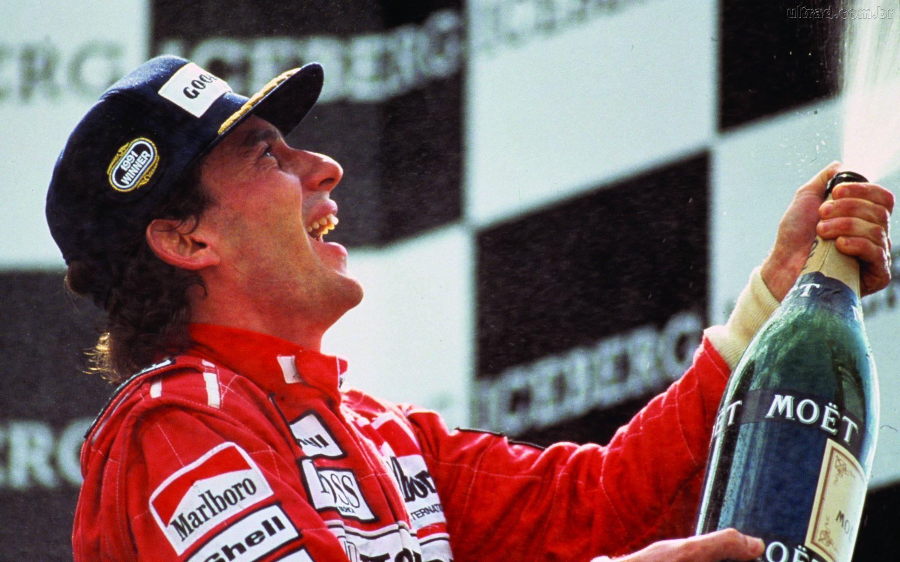

Ayrton Senna
O melhor piloto da história da Fórmula 1

Ayrton Senna esteve no pódio 80 vezes na Fórmula 1, sendo 41 delas por vitórias
Cronologia da vida de Ayrton Senna
- 1960 Nasceu em São Paulo, Brasil
- 1973 Ganhou a primeira corrida oficial de kart
- 1977 Ganhou o campeonato sul americano de kart
- 1978 Campeão brasileiro de kart
- 1979 Campeão brasileiro de kart
- 1980 Campeão brasileiro de kart
- 1981 Ganha o campeonato Fórmula Ford, na Europa
- 1982 Estreia na Fórmula 3 britânica
- 1983 Venceu na Fórmula 3 inglesa
- 1984 Estreia na Fórmula 1, na equipe Toleman
- 1985 Começa a correr pela Lotus
- 1988 Começa na McLaren e ganha o campeonato
- 1990 Conquista o campeonato pela segunda vez
- 1991 Conquista o terceiro título mundial
- 1994 Começa a correr pela Willians
- 1994 Morre em acidente em San Marino, Itália
"Eu sabia que por ali era mais rápido, eu fiz para experimentar. Quando me informaram que era a melhor volta da corrida, eu falei ‘OK, se o Prost passar à minha frente, eu vou passar ele por dentro do box’. Só isso!"
Ayrton Senna
Ayrton Senna